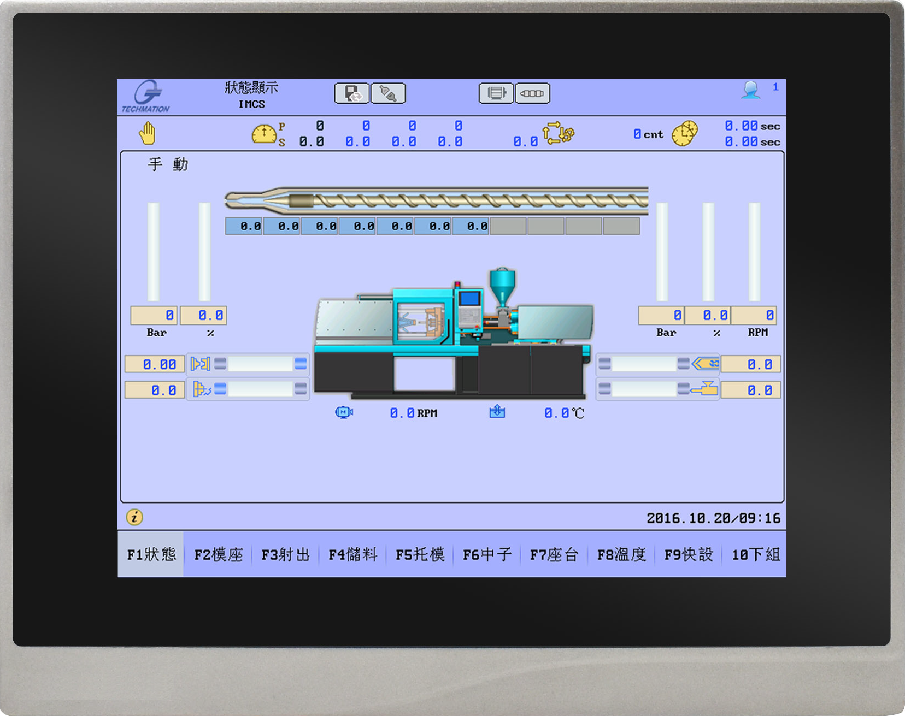

One machine to wash them all
Yes, This might be the biggest project I've undertaken so far.
A fully automated ginger processing plant built from scratch.
I am so excited for this one. One of my mates approached me with the requirement for his dad's mid scale farm and I was intrigued. This is just a preliminary design that I did to figure out what components needs to be there and estimate a rough budget. The purpose of the machine is to take raw ginger right after it's been pulled out from the ground and make that all clean and dry before sorting and packaging.
Following flow chart shows the purpose of all modules in the machine and how the produce goes through each stage.
I've been searching all over the internet for reference designs and this machine is heavily based on existing machinery in this field. I'm trying to keep it simple for this first design and improve on it as we learn new things
One of the cool things I remembered from my "How it's made" binge phase was the use of an air knife to partially dry things before they go in to a lengthy convection drying stage. The air knife takes away all the surface droplets mechanically and greatly reduces the conventional drying times. This technique works even on weird uneven surfaces making it ideal for a produce like ginger.
Here's a video I found on youtube that shows an Air Knife in operation.
All of this operation will be controlled through an HMI which is the part that I'm most excited about. The VFD motor drives speak ModBus RTU and it's easy to interface to them to control remotely. I'm thinking of making a custom PCB with RS485 interface and couple of opto-isolated digital inputs to interface this machine. Everything will be read with a microcontroller (Preferably STM32 if I can get one) and controlled using a simple UI.
The user interface will be a web server hosted on a raspberry pi or some other single board linux pc. The advantage of having a web interface is the ability to access it from any device you can think of with a modern web browser. This eliminates a lot of development time writing individual apps for each platform out there.
This project is far from an actual manufacturable design. The CAD model was made overnight for a presentation the next day as a proposal to the client. I'll be updating my github repo with the latest development and you can follow along by clicking the link below.
Ginger wash Plant github repo